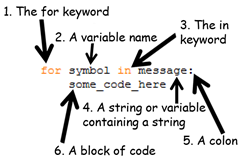

Topics Covered In This Chapter:
· The import statement
· Constants
· The upper() string method
· for loops
· if, elif, and else statements
· The in and not in operators
· The find() string method
“BIG BROTHER IS WATCHING YOU.”
“1984” by George Orwell
In Chapter 1, we used a cipher wheel, a St. Cyr slide, and a chart of letters and numbers to implement the Caesar cipher. In this chapter, we will use a computer program to implement the Caesar cipher.
The reverse cipher always encrypts the same way. But the Caesar cipher uses keys, which encrypt the message in a different way depending on which key is used. The keys for the Caesar cipher are the integers from 0 to 25. Even if a cryptanalyst knows that the Caesar cipher was used, that alone does not give her enough information to break the cipher. She must also know the key.
Type in the following code into the file editor, and then save it as caesarCipher.py. Press F5 to run the program. Note that first you will need to download the pyperclip.py module and place this file in the same directory (that is, folder) as the caesarCipher.py file. You can download this file from http://invpy.com/pyperclip.py
Source code for caesarCipher.py
1. # Caesar Cipher
2. # http://inventwithpython.com/hacking (BSD Licensed)
3.
4. import pyperclip
5.
6. # the string to be encrypted/decrypted
7. message = 'This is my secret message.'
8.
9. # the encryption/decryption key
10. key = 13
11.
12. # tells the program to encrypt or decrypt
13. mode = 'encrypt' # set to 'encrypt' or 'decrypt'
14.
15. # every possible symbol that can be encrypted
16. LETTERS = 'ABCDEFGHIJKLMNOPQRSTUVWXYZ'
17.
18. # stores the encrypted/decrypted form of the message
19. translated = ''
20.
21. # capitalize the string in message
22. message = message.upper()
23.
24. # run the encryption/decryption code on each symbol in the message string
25. for symbol in message:
26. if symbol in LETTERS:
27. # get the encrypted (or decrypted) number for this symbol
28. num = LETTERS.find(symbol) # get the number of the symbol
29. if mode == 'encrypt':
30. num = num + key
31. elif mode == 'decrypt':
32. num = num - key
33.
34. # handle the wrap-around if num is larger than the length of
35. # LETTERS or less than 0
36. if num >= len(LETTERS):
37. num = num - len(LETTERS)
38. elif num < 0:
39. num = num + len(LETTERS)
40.
41. # add encrypted/decrypted number's symbol at the end of translated
42. translated = translated + LETTERS[num]
43.
44. else:
45. # just add the symbol without encrypting/decrypting
46. translated = translated + symbol
47.
48. # print the encrypted/decrypted string to the screen
49. print(translated)
50.
51. # copy the encrypted/decrypted string to the clipboard
52. pyperclip.copy(translated)
When you run this program, the output will look like this:
GUVF VF ZL FRPERG ZRFFNTR.
The above text is the string 'This is my secret message.' encrypted with the Caesar cipher with key 13. The Caesar cipher program you just ran will automatically copy this encrypted string to the clipboard so you can paste it in an email or text file. This way you can easily take the encrypted output from the program and send it to another person.
To decrypt, just paste this text as the new value stored in the message variable on line 7. Then change the assignment statement on line 13 to store the string 'decrypt' in the variable mode:
caesarCipher.py
6. # the string to be encrypted/decrypted
7. message = 'GUVF VF ZL FRPERG ZRFFNTR.'
8.
9. # the encryption/decryption key
10. key = 13
11.
12. # tells the program to encrypt or decrypt
13. mode = 'decrypt' # set to 'encrypt' or 'decrypt'
When you run the program now, the output will look like this:
THIS IS MY SECRET MESSAGE.
If you see this error message when running the program:
Traceback (most recent call last):
File "C:\Python32\caesarCipher.py", line 4, in <module>
import pyperclip
ImportError: No module named pyperclip
…then you have not downloaded the pyperclip module into the right folder. If you still cannot get the module working, just delete lines 4 and 52 (which have the text “pyperclip” in them) from the program. This will get rid of the code that depends on the pyperclip module.
To compare the code you typed to the code that is in this book, you can use the online diff tool on this book’s website. Open http://invpy.com/hackingdiff in your web browser. Copy and paste your code into the text field on this web page, and then click the Compare button. The diff tool will show any differences between your code and the code in this book. This can help you find any typos you made when typing out the program.
Practice exercises can be found at http://invpy.com/hackingpractice6A.
Let’s go over exactly what each of the lines of code in this program does.
caesarCipher.py
1. # Caesar Cipher
2. # http://inventwithpython.com/hacking (BSD Licensed)
3.
4. import pyperclip
Line 4 is a new kind of statement called an import statement. While Python includes many built-in functions, some functions exist in separate programs called modules. Modules are Python programs that contain additional functions that can be used by your program. In this case, we’re importing a module named pyperclip so that we can call the pyperclip.copy() function later in this program.
The import statement is made up of the import keyword followed by the module name. Line 4 is an import statement that imports the pyperclip module, which contains several functions related to copying and pasting text to the clipboard.
caesarCipher.py
6. # the string to be encrypted/decrypted
7. message = 'This is my secret message.'
8.
9. # the encryption/decryption key
10. key = 13
11.
12. # tells the program to encrypt or decrypt
13. mode = 'encrypt' # set to 'encrypt' or 'decrypt'
The next few lines set three variables: message will store the string to be encrypted or decrypted, key will store the integer of the encryption key, and mode will store either the string 'encrypt' (which will cause code later in the program to encrypt the string in message) or 'decrypt' (which will tell the program to decrypt rather than encrypting).
caesarCipher.py
15. # every possible symbol that can be encrypted
16. LETTERS = 'ABCDEFGHIJKLMNOPQRSTUVWXYZ'
We also need a string that contains all the capital letters of the alphabet in order. It would be tiring to type the full 'ABCDEFGHIJKLMNOPQRSTUVWXYZ' string value each time we use it in the program (and we might make typos when typing it, which would cause errors in our program). So instead we will type the code for the string value once and place it in a variable named LETTERS. This string contains all the letters that our cipher program can possibly encrypt. This set of letters (which don’t have to be just letters but can also be numbers, punctuation, or any other symbol) is called the cipher’s symbol set. The end of this chapter will tell you how to expand this program’s symbol set to include other characters besides letters.
The LETTERS variable name is in all capitals. This is the programming convention for constant variables. Constants are variables whose values are not meant to be changed when the program runs. Although we can change LETTERS just like any other variable, the all-caps reminds the programmer to not write code that does so.
Like all conventions, we don’t have to follow it. But doing it this way makes it easier for other programmers to understand how these variables are used. (It even can help you if you are looking at code you wrote yourself a long time ago.)
caesarCipher.py
18. # stores the encrypted/decrypted form of the message
19. translated = ''
20.
21. # capitalize the string in message
22. message = message.upper()
On line 19, the program stores a blank string in a variable named translated. Just like in the reverse cipher from last chapter, by the end of the program the translated variable will contain the completely encrypted (or decrypted) message. But for now it starts as a blank string.
Line 22 is an assignment statement that stores a value in a variable named message, but the expression on the right side of the = operator is something we haven’t seen before: message.upper().
This is a method call. Methods are just like functions, except they are attached to a non-module value (or in the case of line 22, a variable containing a value) with a period. The name of this method is upper(), and it is being called on the string value stored in the message variable.
A function is not a method just because it is in a module. You will see on line 52 that we call pyperclip.copy(), but pyperclip is a module that was imported on line 4, so copy() is not a method. It is just a function that is inside the pyperclip module. If this is confusing, then you can always call methods and functions a “function” and people will know what you’re talking about.
Most data types (such as strings) have methods. Strings have a method called upper() and lower() which will evaluate to an uppercase or lowercase version of that string, respectively. Try typing the following into the interactive shell:
>>> 'Hello world!'.upper()
'HELLO WORLD!'
>>> 'Hello world!'.lower()
'hello world!'
>>>
Because the upper() method returns a string value, you can call a method on that string as well. Try typing 'Hello world!'.upper().lower() into the shell:
>>> 'Hello world!'.upper().lower()
'hello world!'
>>>
'Hello world!'.upper() evaluates to the string 'HELLO WORLD!', and then we call the lower() method on that string. This returns the string 'hello world!', which is the final value in the evaluation. The order is important. 'Hello world!'.lower().upper() is not the same as 'Hello world!'.upper().lower():
>>> 'Hello world'.lower().upper()
'HELLO WORLD!'
>>>
If a string is stored in a variable, you can call any string method (such as upper() or lower()) on that variable. Look at this example:
>>> fizz = 'Hello world!'
>>> fizz.upper()
'HELLO WORLD!'
>>> fizz
'Hello world!'
Calling the upper() or lower() method on a string value in a variable does not change the value inside a variable. Methods are just part of expressions that evaluate to a value. (Think about it like this: the expression fizz + 'ABC' would not change the string stored in fizz to have 'ABC' concatenated to the end of it, unless we used it in an assignment statement like fizz = fizz + 'ABC'.)
Different data types have different methods. You will learn about other methods as you read this book. A list of common string methods is at http://invpy.com/stringmethods.
caesarCipher.py
24. # run the encryption/decryption code on each symbol in the message string
25. for symbol in message:
The for loop is very good at looping over a string or list of values (we will learn about lists later). This is different from the while loop, which loops as long as a certain condition is True. A for statement has six parts:
|
1. The for keyword. 2. A variable name. 3. The in keyword. 4. A string value (or a variable containing a string value). 5. A colon. 6. A block of code. |
 Figure 6-1. The parts of a for loop statement. |
Each time the program execution goes through the loop (that is, on each iteration through the loop) the variable in the for statement takes on the value of the next character in the string.
For example, type the following into the interactive shell. Note that after you type the first line, the >>> prompt will turn into ... (although in IDLE, it will just print three spaces) because the shell is expecting a block of code after the for statement’s colon. In the interactive shell, the block will end when you enter a blank line:
>>> for letter in 'Howdy':
... print('The letter is ' + letter)
...
The letter is H
The letter is o
The letter is w
The letter is d
The letter is y
>>>
The for loop is very similar to the while loop, but when you only need to iterate over characters in a string, using a for loop is much less code to type. You can make a while loop that acts the same way as a for loop by adding a little extra code:
>>> i = 0
>>> while i < len('Howdy'):
... letter = 'Howdy'[i]
... print('The letter is ' + letter)
... i = i + 1
...
The letter is H
The letter is o
The letter is w
The letter is d
The letter is y
>>>
Notice that this while loop does the exact same thing that the for loop does, but is not as short and simple as the for loop.
Before we can understand lines 26 to 32 of the Caesar cipher program, we need to first learn about the if, elif, and else statements, the in and not in operators, and the find() string method.
Practice exercises can be found at http://invpy.com/hackingpractice6B.
An if statement can be read as “If this condition is True, execute the code in the following block. Otherwise if it is False, skip the block.” Open the file editor and type in the following small program. Then save the file as password.py and press F5 to run it.
Source code for password.py
1. print('What is the password?')
2. password = input()
3. if password == 'rosebud':
4. print('Access granted.')
5. if password != 'rosebud':
6. print('Access denied.')
7. print('Done.')
When the password = input() line is executed, the user can type in anything she wants and it will be stored as a string in the variable password. If she typed in “rosebud” (in all lowercase letters), then the expression password == 'rosebud' will evaluate to True and the program execution will enter the following block to print the 'Access granted.' string.
If password == 'rosebud' is False, then this block of code is skipped. Next, the second if statement will have its condition also evaluated. If this condition, password != 'rosebud' is True, then the execution jumps inside of the following block to print out 'Access denied.'. If the condition is False, then this block of code is skipped.
Often we want to test a condition and execute one block of code if it is True and another block of code if it is False. The previous password.py example is like this, but it used two if statements.
An else statement can be used after an if statement’s block, and its block of code will be executed if the if statement’s condition is False. You can read the code as “if this condition is true, execute this block, or else execute this block.
Type in the following program and save it as password2.py. Notice that it does the same thing as the previous password.py program, except it uses an if and else statement instead of two if statements:
Source code for password2.py
1. print('What is the password?')
2. password = input()
3. if password == 'rosebud':
4. print('Access granted.')
5. else:
6. print('Access denied.')
7. print('Done.')
There is also an “else if” statement called the elif statement. Like an if statement, it has a condition. Like an else statement, it follows an if (or another elif) statement and executes if the previous if (or elif) statement’s condition was False. You can read if, elif and else statements as, “If this condition is true, run this block. Or else, check if this next condition is true. Or else, just run this last block.” Type in this example program into the file editor and save it as elifeggs.py:
Source code for elifeggs.py
1. numberOfEggs = 12
2. if numberOfEggs < 4:
3. print('That is not that many eggs.')
4. elif numberOfEggs < 20:
5. print('You have quite a few eggs.')
6. elif numberOfEggs == 144:
7. print('You have a lot of eggs. Gross!')
8. else:
9. print('Eat ALL the eggs!')
When you run this program, the integer 12 is stored in the variable numberOfEggs. Then the condition numberOfEggs < 4 is checked to see if it is True. If it isn’t, the execution skips the block and checks numberOfEggs < 20. If it isn’t True, execution skips that block and checks if numberOfEggs == 144. If all of these conditions have been False, then the else block is executed.
Notice that one and only one of these blocks will be executed. You can have zero or more elif statements following an if statement. You can have zero or one else statements, and the else statement always comes last.
An expression of two strings connected by the in operator will evaluate to True if the first string is inside the second string. Otherwise the expression evaluates to False. Notice that the in and not in operators are case-sensitive. Try typing the following in the interactive shell:
>>> 'hello' in 'hello world!'
True
>>> 'ello' in 'hello world!'
True
>>> 'HELLO' in 'hello world!'
False
>>> 'HELLO' in 'HELLO world!'
True
>>> '' in 'Hello'
True
>>> '' in ''
True
>>> 'D' in 'ABCDEF'
True
>>>
The not in operator will evaluate to the opposite of in. Try typing the following into the interactive shell:
>>> 'hello' not in 'hello world!'
False
>>> 'ello' not in 'hello world!'
False
>>> 'HELLO' not in 'hello world!'
True
>>> 'HELLO' not in 'HELLO world!'
False
>>> '' not in 'Hello'
False
>>> '' not in ''
False
>>> 'D' not in 'ABCDEF'
False
>>>
Expressions using the in and not in operators are handy for conditions of if statements so that we can execute some code if a string exists inside of another string.
Also, the in keyword used in for statements is not the same as the in operator used here. They are just typed the same.
Just like the upper() method can be called on a string values, the find() method is a string method. The find() method takes one string argument and returns the integer index of where that string appears in the method’s string. Try typing the following into the interactive shell:
>>> 'hello'.find('e')
1
>>> 'hello'.find('o')
4
>>> fizz = 'hello'
>>> fizz.find('h')
0
>>>
If the string argument cannot be found, the find() method returns the integer -1. Notice that the find() method is case-sensitive. Try typing the following into the interactive shell:
>>> 'hello'.find('x')
-1
>>> 'hello'.find('H')
-1
>>>
The string you pass as an argument to find() can be more than one character. The integer that find() returns will be the index of the first character where the argument is found. Try typing the following into the interactive shell:
>>> 'hello'.find('ello')
1
>>> 'hello'.find('lo')
3
>>> 'hello hello'.find('e')
1
>>>
The find() string method is like a more specific version of using the in operator. It not only tells you if a string exists in another string, but also tells you where.
Practice exercises can be found at http://invpy.com/hackingpractice6C.
Now that we understand how if, elif, else statements, the in operator, and the find() string method works, it will be easier to understand how the rest of the Caesar cipher program works.
caesarCipher.py
26. if symbol in LETTERS:
27. # get the encrypted (or decrypted) number for this symbol
28. num = LETTERS.find(symbol) # get the number of the symbol
If the string in symbol (which the for statement has set to be only a single character) is a capital letter, then the condition symbol in LETTERS will be True. (Remember that on line 22 we converted message to an uppercase version with message = message.upper(), so symbol cannot possibly be a lowercase letter.) The only time the condition is False is if symbol is something like a punctuation mark or number string value, such as '?' or '4'.
We want to check if symbol is an uppercase letter because our program will only encrypt (or decrypt) uppercase letters. Any other character will be added to the translated string without being encrypted (or decrypted).
There is a new block that starts after the if statement on line 26. If you look down the program, you will notice that this block stretches all the way to line 42. The else statement on line 44 is paired to the if statement on line 26.
caesarCipher.py
29. if mode == 'encrypt':
30. num = num + key
31. elif mode == 'decrypt':
32. num = num - key
Now that we have the current symbol’s number stored in num, we can do the encryption or decryption math on it. The Caesar cipher adds the key number to the letter’s number to encrypt it, or subtracts the key number from the letter’s number to decrypt it.
The mode variable contains a string that tells the program whether or not it should be encrypting or decrypting. If this string is 'encrypt', then the condition for line 29’s if statement will be True and line 30 will be executed (and the block after the elif statement will be skipped). If this string is any other value besides 'encrypt', then the condition for line 29’s if statement is False and the program execution moves on to check the elif statement’s condition.
This is how our program knows when to encrypt (where it is adding the key) or decrypt (where it is subtracting the key). If the programmer made an error and stored 'pineapples' in the mode variable on line 13, then both of the conditions on lines 29 and 31 would be False and nothing would happen to the value stored in num. (You can try this yourself by changing line 13 and re-running the program.)
caesarCipher.py
34. # handle the wrap-around if num is larger than the length of
35. # LETTERS or less than 0
36. if num >= len(LETTERS):
37. num = num - len(LETTERS)
38. elif num < 0:
39. num = num + len(LETTERS)
Remember that when we were implementing the Caesar cipher with paper and pencil, sometimes the number after adding or subtracting the key would be greater than or equal to 26 or less than 0. In those cases, we had to add or subtract 26 to the number to “wrap-around” the number. This “wrap-around” is what lines 36 to 39 do for our program.
If num is greater than or equal to 26, then the condition on line 36 is True and line 37 is executed (and the elif statement on line 38 is skipped). Otherwise, Python will check if num is less than 0. If that condition is True, then line 39 is executed.
The Caesar cipher adds or subtracts 26 because that is the number of letters in the alphabet. If English only had 25 letters, then the “wrap-around” would be done by adding or subtracting 25.
Notice that instead of using the integer value 26 directly, we use len(LETTERS). The function call len(LETTERS) will return the integer value 26, so this code works just as well. But the reason that we use len(LETTERS) instead of 26 is that the code will work no matter what characters we have in LETTERS.
We can modify the value stored in LETTERS so that we encrypt and decrypt more than just the uppercase letters. How this is done will be explained at the end of this chapter.
caesarCipher.py
41. # add encrypted/decrypted number's symbol at the end of translated
42. translated = translated + LETTERS[num]
Now that the integer in num has been modified, it will be the index of the encrypted (or decrypted) letter in LETTERS. We want to add this encrypted/decrypted letter to the end of the translated string, so line 42 uses string concatenation to add it to the end of the current value of translated.
caesarCipher.py
44. else:
45. # just add the symbol without encrypting/decrypting
46. translated = translated + symbol
Line 44 has four spaces of indentation. If you look at the indentation of the lines above, you’ll see that this means it comes after the if statement on line 26. There’s a lot of code in between this if and else statement, but it all belongs in the block of code that follows the if statement on line 26. If that if statement’s condition was False, then the block would have been skipped and the program execution would enter the else statement’s block starting at line 46. (Line 45 is skipped because it is a comment.)
This block has just one line in it. It adds the symbol string as it is to the end of translated. This is how non-letter strings like ' ' or '.' are added to the translated string without being encrypted or decrypted.
caesarCipher.py
48. # print the encrypted/decrypted string to the screen
49. print(translated)
50.
51. # copy the encrypted/decrypted string to the clipboard
52. pyperclip.copy(translated)
Line 49 has no indentation, which means it is the first line after the block that started on line 26 (the for loop’s block). By the time the program execution reaches line 49, it has looped through each character in the message string, encrypted (or decrypted) the characters, and added them to translated.
Line 49 will call the print() function to display the translated string on the screen. Notice that this is the only print() call in the entire program. The computer does a lot of work encrypting every letter in message, handling wrap-around, and handling non-letter characters. But the user doesn’t need to see this. The user just needs to see the final string in translated.
Line 52 calls a function that is inside the pyperclip module. The function’s name is copy() and it takes one string argument. Because copy() is a function in the pyperclip module, we have to tell Python this by putting pyperclip. in front of the function name. If we type copy(translated) instead of pyperclip.copy(translated), Python will give us an error message.
You can see this error message for yourself by typing this code in the interactive shell:
>>> copy('Hello')
Traceback (most recent call last):
File "<stdin>", line 1, in <module>
NameError: name 'copy' is not defined
>>>
Also, if you forget the import pyperclip line before trying to call pyperclip.copy(), Python will give an error message. Try typing this into the interactive shell:
>>> pyperclip.copy('Hello')
Traceback (most recent call last):
File "<stdin>", line 1, in <module>
NameError: name 'pyperclip' is not defined
>>>
That’s the entire Caesar cipher program. When you run it, notice how your computer can execute the entire program and encrypt the string in less than a second. Even if you type in a very, very long string for the value to store in the message variable, your computer can encrypt or decrypt a message within a second or two. Compare this to the several minutes it would take to do this with a cipher wheel or St. Cyr slide. The program even copies the encrypted text to the clipboard so the user can simply paste it into an email to send to someone.
One problem with the Caesar cipher that we’ve implemented is that it cannot encrypt non-letters. For example, if you encrypt the string 'The password is 31337.' with the key 20, it will encrypt to 'Dro zkccgybn sc 31337.' This encrypted message doesn’t keep the password in the message very secret. However, we can modify the program to encrypt other characters besides letters.
If you change the string that is stored in LETTERS to include more than just the uppercase letters, then the program will encrypt them as well. This is because on line 26, the condition symbol in LETTERS will be True. The value of num will be the index of symbol in this new, larger LETTERS constant variable. The “wrap-around” will need to add or subtract the number of characters in this new string, but that’s already handled because we use len(LETTERS) instead of typing in 26 directly into the code. (This is why we programmed it this way.)
The only changes you have to make are to the LETTERS assignment statement on line 16 and commenting out line 22 which capitalizes all the letters in message.
caesarCipher.py
15. # every possible symbol that can be encrypted
16. LETTERS = ' !"#$%&\'()*+,-./0123456789:;<=>?@ABCDEFGHIJKLMNOPQRSTUVWXYZ[\\] ^_`a bcdefghijklmnopqrstuvwxyz{|}~'
17.
18. # stores the encrypted/decrypted form of the message
19. translated = ''
20.
21. # capitalize the string in message
22. #message = message.upper()
Notice that this new string has the escape characters \' and \\ in it. You can download this new version of the program from http://invpy.com/caesarCipher2.py.
This modification to our program is like if we had a cipher wheel or St. Cyr slide that had not only uppercase letters but numbers, punctuation, and lowercase letters on it as well.
Even though the value for LETTERS has to be the same when running the program for decryption as when it encrypted the message, this value doesn’t have to be secret. Only the key needs to be kept secret, while the rest of program (including the code for the Caesar cipher program) can be shared with the world.
You’ve had to learn several programming concepts and read through quite a few chapters to get to this point, but now you have a program that implements a secret cipher. And more importantly, you can understand how this code works.
Modules are Python programs that contain useful functions we can use. To use these functions, you must first import them with an import statement. To call functions in an imported module, put the module name and a period before the function name, like: module.function().
Constant variables are by convention written in UPPERCASE. These variables are not meant to have their value changed (although nothing prevents the programmer from writing code that does this). Constants are helpful because they give a “name” to specific values in your program.
Methods are functions that are attached to a value of a certain data type. The upper() and lower() string methods return an uppercase or lowercase version of the string they are called on. The find() string method returns an integer of where the string argument passed to it can be found in the string it is called on.
A for loop will iterate over all the characters in string value, setting a variable to each character on each iteration. The if, elif, and else statements can execute blocks of code based on whether a condition is True or False.
The in and not in operators can check if one string is or isn’t in another string, and evaluates to True or False accordingly.
Knowing how to program gives you the power to take a process like the Caesar cipher and put it down in a language that a computer can understand. And once the computer understands how to do it, it can do it much faster than any human can and with no mistakes (unless there are mistakes in your programming.) This is an incredibly useful skill, but it turns out the Caesar cipher can easily be broken by someone who knows computer programming. In the next chapter we will use our skills to write a Caesar cipher “hacker” so we can read ciphertext that other people encrypted. So let’s move on to the next chapter, and learn how to hack encryption.